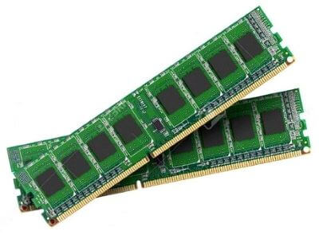
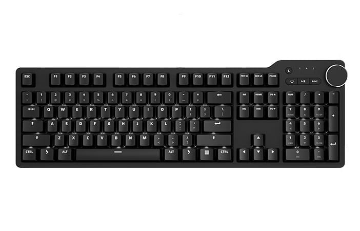

Що таке комп'ютер?
Комп’ютер — це електронний пристрій, який маніпулює інформацією або даними. Він має можливість зберігати, отримувати та обробляти дані.
Можливо, ви вже знаєте, що за допомогою комп’ютера можна друкувати документи, надсилати
електронні листи, грати в ігри та переглядати веб-сторінки. Ви також можете використовувати його для редагування або створення електронних таблиць,
презентації та навіть відео. Він складається з апаратного та програмного забезпечення.
 Апаратне забезпечення
це будь-яка частина комп’ютера, яка має
фізичну структуру
, наприклад клавіатуру чи мишу. Він також містить усі внутрішні частини комп’ютера, які ви можете побачити на зображенні нижче.
Апаратне забезпечення
це будь-яка частина комп’ютера, яка має
фізичну структуру
, наприклад клавіатуру чи мишу. Він також містить усі внутрішні частини комп’ютера, які ви можете побачити на зображенні нижче.


Основні компоненти комп'ютера:
- Процесор (CPU):
- Мозок комп'ютера, який виконує інструкції програм.
- Характеризується кількістю ядер, тактовою частотою та кеш-пам'яттю.
- Впливає на швидкість роботи комп'ютера.
- Оперативна пам'ять (RAM): 
- Зберігає дані, які використовуються процесором в даний момент.
- Характеризується об'ємом.
- Впливає на швидкість роботи комп'ютера та можливість багатозадачності.
- Жорсткий диск (HDD) або твердотільний накопичувач (SSD):
- Зберігає операційну систему, програми та дані користувача.
- Характеризується об'ємом, швидкістю читання/запису та типом (HDD або SSD).
- SSD значно швидші, ніж HDD, але й дорожчі.
- Відеокарта:
- Обробляє та виводить зображення на монітор.
- Характеризується типом, об'ємом пам'яті та частотою.
- Впливає на якість зображення та можливість запускати комп'ютерні ігри.
- Монітор:
- Відображає зображення, яке генерує відеокарта.
- Характеризується розміром, роздільною здатністю, типом матриці (IPS, TN) та частотою оновлення.
- Впливає на комфортність роботи та якість зображення.
- Клавіатура: 
- Пристрій для введення тексту та команд.
- Характеризується типом розкладки, типом клавіш (мембранні, механічні) та наявністю додаткових кнопок.
- Миша:
- Пристрій для керування курсором на екрані.
- Характеризується типом сенсора (оптичний, лазерний), роздільною здатністю та наявністю додаткових кнопок.


Історія комп'ютерів
Перші комп'ютери були громіздкими та дорогими, займали цілі кімнати й могли обслуговувати лише невелику кількість людей. З часом завдяки розвитку технологій розмір комп'ютерів значно зменшився, а їхня потужність і доступність зросли. Сьогодні персональні комп'ютери може мати практично кожна людина, а їхні можливості вражають уяву.
| Рік | Подія |
|---|---|
| 1946 | Створення першого електронного комп'ютера ENIAC |
| 1977 | Випуск Apple II, одного з перших персональних комп'ютерів |
| 1981 | Випуск IBM PC, який став стандартом для персональних комп'ютерів |
| 1993 | Випуск першого веб-браузера Mosaic |
| 2001 | Випуск першого iPod, революційного портативного музичного плеєра |
| 2004 | Випуск Facebook, який став найпопулярнішою соціальною мережею у світі |
| 2005 | Випуск YouTube, який став найпопулярнішим веб-сайтом для обміну відео |
| 2007 | Випуск iPhone, революційного смартфона, який змінив мобільний світ |
| 2008 | Випуск Android, операційної системи для смартфонів, яка стала найпопулярнішою у світі |
| 2010 | Випуск iPad, планшетного комп'ютера, який став дуже популярним для читання, перегляду веб-сторінок та ігор |
| 2011 | Випуск Google+, соціальної мережі Google, яка не змогла конкурувати з Facebook |
| 2012 | Випуск Raspberry Pi, недорогого комп'ютера, який популяризував програмування та електроніку |
| 2015 | Випуск Apple Watch, розумного годинника, який став дуже популярним для відстеження фізичної активності та отримання повідомлень |
| 2021 | Випуск Metaverse, віртуальної платформи, яка об'єднує віртуальну реальність, доповнену реальність та Інтернет |
| 2022 | Штучний інтелект (ШІ) стає все більш потужним і використовується в багатьох галузях, таких як медицина, фінанси та транспорт |
 великі комп'ютери, використовуються для обробки великих обсягів даних
у банках, страхових компаніях, телекомунікаційних компаніях тощо.
великі комп'ютери, використовуються для обробки великих обсягів даних
у банках, страхових компаніях, телекомунікаційних компаніях тощо. потужні комп'ютери, які надають доступ до ресурсів (файлів, принтерів,
програм) для інших комп'ютерів у мережі.
потужні комп'ютери, які надають доступ до ресурсів (файлів, принтерів,
програм) для інших комп'ютерів у мережі. найпоширеніший тип комп'ютерів, використовуються для
роботи, навчання, розваг тощо.
найпоширеніший тип комп'ютерів, використовуються для
роботи, навчання, розваг тощо. мобільні комп'ютери з сенсорним екраном, використовуються
для перегляду веб-сторінок, читання книг,
перегляду фільмів тощо. Instead of a keyboard
мобільні комп'ютери з сенсорним екраном, використовуються
для перегляду веб-сторінок, читання книг,
перегляду фільмів тощо. Instead of a keyboard
 Багато мобільних телефонів можуть робити багато речей, які
можуть робити комп’ютери,включаючи перегляд веб-сторінок та ігри.
Їх часто називають смартфонами
Багато мобільних телефонів можуть робити багато речей, які
можуть робити комп’ютери,включаючи перегляд веб-сторінок та ігри.
Їх часто називають смартфонами комп'ютери з потужними графічними картами, які використовуються для
комп'ютерних ігор.
комп'ютери з потужними графічними картами, які використовуються для
комп'ютерних ігор. легкі та компактні ноутбуки, які використовуються для роботи в Інтернеті
та мобільного використання.
легкі та компактні ноутбуки, які використовуються для роботи в Інтернеті
та мобільного використання. Другий тип комп’ютера, з яким ви можете бути знайомі, – це ноутбук
комп’ютер, який зазвичай називають ноутбуком. Ноутбуки працюють від батарейок
комп’ютери, які є більш портативними, ніж настільні комп’ютери, що дозволяє використовувати їх майже будь-де.
Другий тип комп’ютера, з яким ви можете бути знайомі, – це ноутбук
комп’ютер, який зазвичай називають ноутбуком. Ноутбуки працюють від батарейок
комп’ютери, які є більш портативними, ніж настільні комп’ютери, що дозволяє використовувати їх майже будь-де.